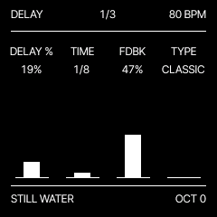
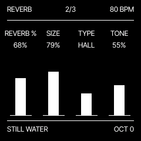
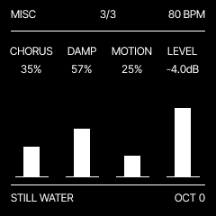

The essentials.
One track, eight voices and a repeating generative pattern.
Play and navigate
Turn the PATCHES encoder (labelled PRESETS on the physical FM-1) on HOME to select a sound. REC toggles its favourite heart; favourites also appear at the top of the six-row list. The patch name and octave sit along the bottom. Changes mark the sound with an asterisk.
| HOME | Patch list. Press HOME again on the list to open Delete PATCHNAME. |
|---|---|
| GLO 1 / 2 | Oscillator 1: Wave, Detune, Mix, Level. Oscillator 2: Wave, Tune, Level. Its first wave is OFF. Both share the filter, envelope and effects. |
| EDIT | Filter cutoff, resonance, envelope amount and drive. |
| ENV | Attack, Decay, Sustain, Release, with an envelope graph. |
| LFO | Rate, Filter depth, Target, Target depth. Targets: volume, delay send, oscillator 2 pitch or detune. |
| SELECT | Tempo, 40–240 BPM. Default: 80 BPM. |
| ALGORITHM | Low-pass filter cutoff, with a response diagram. |
| OCT− / OCT+ | Live-keyboard octave, −3 to +3. Dim, medium and bright LEDs show the amount; both off means OCT 0. |
| MASTER | Output volume. |
Sequence 1 — ARP
BARS sets loop length in 4/4 bars (1–16). NOTES sets the event count (1–32). DUR /16 sets note length in sixteenth-note units. PROB % sets the proportion of enabled events. The generated result repeats identically; probability is resolved when the pattern is generated, not randomly on every lap.
Sequence 2 — SEQ
DIR spreads pitches up, down, then in both directions. INTERVAL changes the distance between notes in scale steps. CHAOS rearranges pitches. TIME adds timing variations, growing more extreme as it rises. With these four values at zero, the generator uses the root pitch class, within the permitted range, with evenly distributed timing.
PLAY starts and stops the loop. Changes regenerate the pattern while the playhead keeps moving. The piano roll shows the pattern and current position. An empty note range produces silence.
Scale — SCL 1 / 2
Page 1: root, scale, minimum and maximum note. Page 2: LED highlights keys in the scale; Scale only blocks notes outside it on the live keyboard and incoming MIDI. Both options are saved in the patch.
New sequence options: DIR adds DU, Bounce, Out, In, Pedal and a fixed Walk, each with seven ranges. INTERVAL adds 3rd/4th, 3rd/5th, 4th/5th, 2nd/3rd, Triad, 5th/4th, octave/3rd and 3rd/4th/5th. These are scale-based melodic steps, not chords. New sequences wrap within the note range. CHAOS 0 keeps order; 1–999 select seeded permutations, not intensity. Repeated pitches can give identical results.
Effects — FX 1 / 2 / 3



| FX 1 | Delay %, Time, Feedback, Type. |
|---|---|
| FX 2 | Reverb %, Size, Type, Tone. |
| FX 3 | Chorus, Damp, Motion, Level. |
Delay types: Classic (mono), Ping Pong (alternating stereo echoes), Reverse (backwards audio segments). Time values are ordered from short to long, including dotted and triplet divisions up to 4 bars (24 seconds at 40 BPM). Long delays reduce the delay-line sample rate and sound darker; the duration is no longer capped to the short buffer. Reverse records a whole segment before playing it backwards. Ping Pong needs feedback for its second and later echoes. Use headphones or a stereo output to hear the stereo effect.
Reverb types: Room, Spring, Hall, Space, Shimmer, Submarine. Shimmer adds octave-up sound; Submarine adds a low octave and darker filtering. Tone shapes the reverb input; Damp controls tail damping. Motion changes Hall/Space modulation and, for Shimmer/Submarine, pitch-shift contribution. Room and Spring retain their own fixed modulation behaviour.
Save, overwrite and delete
Stop playback, then press SAVE. KNOB 1 moves the cursor and KNOB 2 edits a character. SAVE or OCT+ stores; HOME or OCT− cancels. Names are up to 12 characters. A new name uses a free slot (32 user patches). A matching name opens an overwrite question. KNOB 1 selects Yes/No; HOME confirms. No is selected by default.
On the patch list, press HOME again for Delete PATCHNAME. KNOB 1 selects Yes/No; HOME confirms. No cancels. User patches are removed along with their favourite heart. Factory patches are hidden; overwriting one stores a user copy and hides its factory entry, so a free user slot is required.
Load samples
The sample uploader writes three slots. Each holds up to about 7.38 seconds of mono audio at 22,050 Hz, compressed as 4-bit IMA ADPCM (80 KiB per slot). Stereo files are mixed down and resampled in the browser. Long files are rejected, not trimmed. Root note sets original pitch; loop repeats the sample while the envelope is active. Select SAMPLE 1–3 on GLO 1. Uploading replaces the chosen slot.
Browser and device
The webplayer uses local browser storage. Its sounds are separate from the patches on the physical FM-1. Clearing browser data can remove saved sounds. The installer and sample uploader require Web MIDI with SysEx in a compatible desktop browser, normally Chrome or Edge, over HTTPS. Ordinary sample files are processed locally, not sent to a server.
Updates and compatibility
DRIFT 0.9 keeps the patch record size and three-slot sample layout used by 0.8. Extended CHAOS uses spare record bytes; older firmware cannot reproduce all new settings. The old delay Tone setting now controls reverb Tone. The intended update path preserves DRIFT data; the final hardware test remains pending. Other firmwares can use the flash differently: do not assume their patches or samples are compatible, or that switching back restores them. See release details and keep a backup before changing firmware.